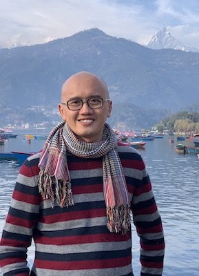

|  | Nicholas YAP Graduate student — 2016-2021 |
Research interests
Taxonomy and systematics of sea anemones and jellyfish, biogeography, and science inquiry-based learning
Bio
With a fascination in natural history and morphology, I am an invertebrate taxonomist. Because very little is known about sea anemones and jellyfishes in Singapore, my research is centered on them.
Throughout my undergraduate and professional career, I have been involved in various research projects. These range from conducting environmental impact assessments, accessing water quality using insects, and carrying out marine ecotoxicology bioassays.
A recurring theme throughout these projects is the need for good species identifications; misinterpretations of biological data may result without it. For many reliable biological studies, good taxonomy is fundamental and essential.
Apart from taxonomic research, my other interest lies in Science pedagogy — I have done research on the effectiveness of science problem-based learning among Secondary school students. I have also participated in several outreach events (e.g the annual NPark’s Festival of Biodiversity) to educate the public more about Singapore’s rich natural heritage.
Academic history and awards
BSc (2nd Lower Honours) in Life Sciences (Concentration in Biology), NUS: 2005—2009
PhD Candidate, TMSI Research Scholarship Recipient, NUS - Department of Biological Sciences: Starting Semester 2, AY 2015—2016
Professional positions
Aug 2019 – present: Vice-President, The Singapore Institute of Biology
Sept 2016 – Aug 2019: Honorary Treasurer, The Singapore Institute of Biology
Publications
Peer-reviewed journal articles
Yap NWL, Tan R, Yong CLX, Tan KS & Huang D (2019) Sea anemones (Cnidaria, Actiniaria) of Singapore: redescription and taxonomy of Phymanthus pinnulatus Martens in Klunzinger, 1877. Zookeys, 840: 1-20. doi:10.3897/zookeys.840.31390
Fautin DG, Tan SH, Tan R, Yap NWL, Crowther A, Goodwill R, Sanpanich K & Tay YC (2015) Sea anemones (Cnidaria: Actiniaria) of Singapore: shallow-water species known also from the Indian subcontinent. Raffles Bulletin of Zoology, Supplement 31: 44—59.
Seah JZS, Yap NWL, Tan LT & Goh BPL (2015) Distribution and abundance of Octocoral (Octocorallia, Alcyonacea) communities at three Southern Islands of Singapore. Ocean Science Journal, 50(2): 299—306.
Tan LT, Goh BPL & Yap NWL (2015) Project-based learning: engaging secondary school students in authentic environment science research. Asian Youth Journal of Biology, 3: 1—4.
Yap NWL, Fautin DG, Ramos DA, Tan R (2014) Sea anemones of Singapore: Synpeachia temasek, new genus, new species, and a redescription of Metapeachia tropica (Cnidaria: Actiniaria: Haloclavidae). Proceedings of the Biological Society of Washington, 127(3): 439—454.
Yap NWL, Lin Y, Todd PA (2013) Chelae force generation at variable gape sizes in the mud crab, Scylla olivacea (Brachyura: Portunidae). Nature in Singapore, 6: 179—185.
Book chapter
Yap NWL, Ong JY (2012) A survey of jellyfish (Cnidaria) around St John’s Island in the Singapore Straits. In: Tan K.S. (ed.), Contribution to Marine Science 2012. 168 pp.
Book
Jaafar Z, Huang D, Tanzil JTI, Ow YX, Yap NWL (eds.) The Singapore Blue Plan 2018. 230pp. ISBN 978-981-11-9018-6 [Also contributed as a co-author in Chapter 2: Marine Organisms]
Goh BPL, Lai CH, Tan LT, Yap NWL, Dissanayake A (2014) Handbook of Marine Ecotoxicology Techniques. National Institute of Education, Nanyang Technological University. National Parks Board, Singapore, 110 pp. https://www.nparks.gov.sg/~/media/nparks-real-content/biodiversity/programmes-and-initiatives/handbook-of-marine-ecotoxicology-techniques_bgoh-et-al.ashx